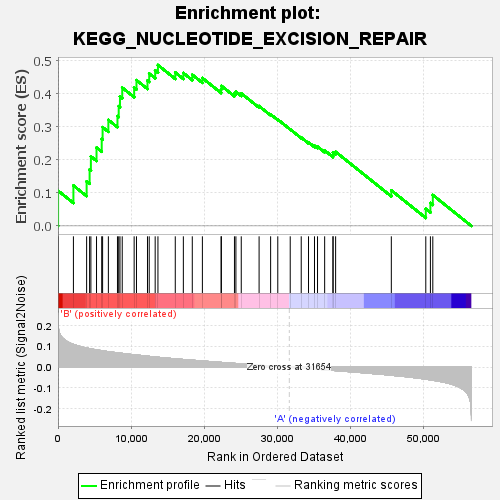

| | | Dataset | my.my.cls#B_versus_A.my.cls#B_versus_A_repos |
| Phenotype | my.cls#B_versus_A_repos |
| Upregulated in class | B |
| GeneSet | KEGG_NUCLEOTIDE_EXCISION_REPAIR |
| Enrichment Score (ES) | 0.48640558 |
| Normalized Enrichment Score (NES) | 1.3601705 |
| Nominal p-value | 0.19521913 |
| FDR q-value | 0.4807707 |
| FWER p-Value | 0.892 |
Table: GSEA Results Summary

Fig 1: Enrichment plot: KEGG_NUCLEOTIDE_EXCISION_REPAIR
Profile of the Running ES Score & Positions of GeneSet Members on the Rank Ordered List
| SYMBOL | TITLE | RANK IN GENE LIST | RANK METRIC SCORE | RUNNING ES | CORE ENRICHMENT | | 1 | CETN2 | na | 12 | 0.222 | 0.1064 | Yes |
| 2 | RFC3 | na | 2111 | 0.110 | 0.1220 | Yes |
| 3 | RAD23B | na | 3922 | 0.093 | 0.1346 | Yes |
| 4 | RFC4 | na | 4330 | 0.090 | 0.1706 | Yes |
| 5 | CUL4B | na | 4504 | 0.089 | 0.2102 | Yes |
| 6 | PCNA | na | 5277 | 0.084 | 0.2368 | Yes |
| 7 | RFC2 | na | 5988 | 0.080 | 0.2626 | Yes |
| 8 | POLE3 | na | 6110 | 0.079 | 0.2984 | Yes |
| 9 | ERCC4 | na | 6899 | 0.075 | 0.3205 | Yes |
| 10 | RPA2 | na | 8146 | 0.070 | 0.3319 | Yes |
| 11 | XPC | na | 8316 | 0.069 | 0.3619 | Yes |
| 12 | RFC5 | na | 8489 | 0.068 | 0.3915 | Yes |
| 13 | ERCC3 | na | 8799 | 0.067 | 0.4181 | Yes |
| 14 | RBX1 | na | 10431 | 0.060 | 0.4180 | Yes |
| 15 | POLD4 | na | 10750 | 0.059 | 0.4407 | Yes |
| 16 | ERCC1 | na | 12258 | 0.053 | 0.4396 | Yes |
| 17 | GTF2H1 | na | 12495 | 0.053 | 0.4606 | Yes |
| 18 | RFC1 | na | 13311 | 0.050 | 0.4700 | Yes |
| 19 | RPA3 | na | 13691 | 0.048 | 0.4864 | Yes |
| 20 | GTF2H5 | na | 16064 | 0.041 | 0.4640 | No |
| 21 | RAD23A | na | 17171 | 0.037 | 0.4624 | No |
| 22 | GTF2H4 | na | 18395 | 0.034 | 0.4571 | No |
| 23 | CUL4A | na | 19778 | 0.030 | 0.4471 | No |
| 24 | MNAT1 | na | 22337 | 0.023 | 0.4131 | No |
| 25 | RPA4 | na | 22384 | 0.023 | 0.4234 | No |
| 26 | DDB2 | na | 24172 | 0.019 | 0.4007 | No |
| 27 | POLE4 | na | 24370 | 0.018 | 0.4059 | No |
| 28 | ERCC2 | na | 25103 | 0.016 | 0.4007 | No |
| 29 | ERCC6 | na | 27547 | 0.010 | 0.3623 | No |
| 30 | LIG1 | na | 29127 | 0.006 | 0.3374 | No |
| 31 | POLE | na | 30107 | 0.004 | 0.3219 | No |
| 32 | RPA1 | na | 31811 | -0.000 | 0.2919 | No |
| 33 | POLE2 | na | 33318 | -0.004 | 0.2673 | No |
| 34 | POLD1 | na | 34317 | -0.007 | 0.2528 | No |
| 35 | CDK7 | na | 35135 | -0.009 | 0.2424 | No |
| 36 | XPA | na | 35552 | -0.010 | 0.2397 | No |
| 37 | ERCC8 | na | 36528 | -0.012 | 0.2283 | No |
| 38 | GTF2H2 | na | 37671 | -0.015 | 0.2154 | No |
| 39 | DDB1 | na | 37676 | -0.015 | 0.2225 | No |
| 40 | CCNH | na | 38031 | -0.016 | 0.2240 | No |
| 41 | GTF2H3 | na | 45660 | -0.038 | 0.1075 | No |
| 42 | POLD2 | na | 50382 | -0.057 | 0.0514 | No |
| 43 | ERCC5 | na | 51014 | -0.060 | 0.0692 | No |
| 44 | POLD3 | na | 51343 | -0.062 | 0.0933 | No |
Table: GSEA details [plain text format]
Fig 2: KEGG_NUCLEOTIDE_EXCISION_REPAIR
Blue-Pink O' Gram in the Space of the Analyzed GeneSet
Fig 3: KEGG_NUCLEOTIDE_EXCISION_REPAIR: Random ES distribution
Gene set null distribution of ES for KEGG_NUCLEOTIDE_EXCISION_REPAIR